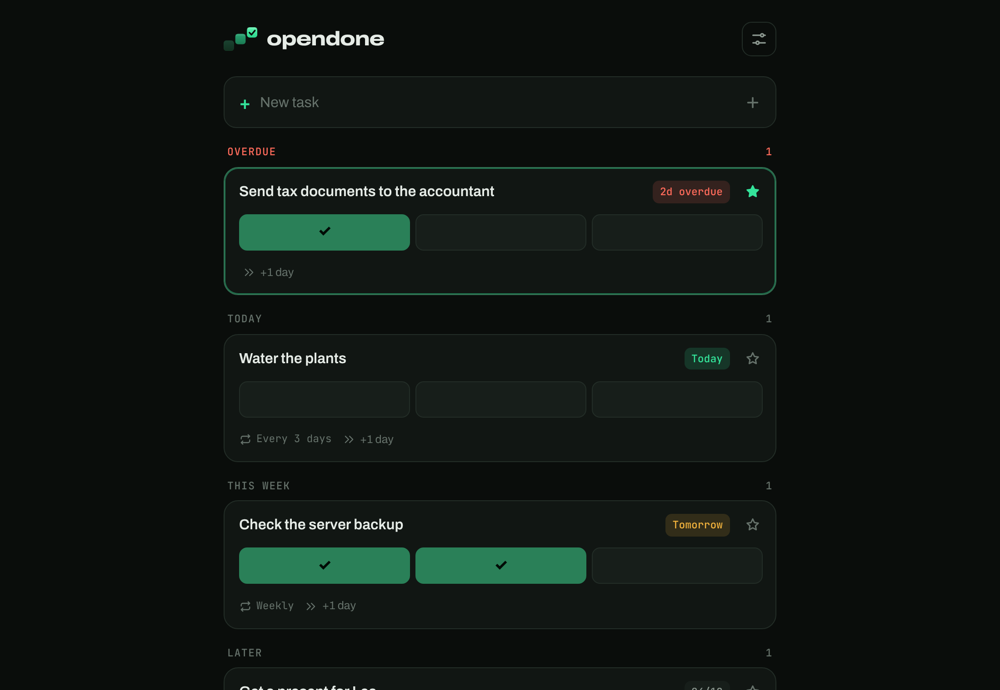
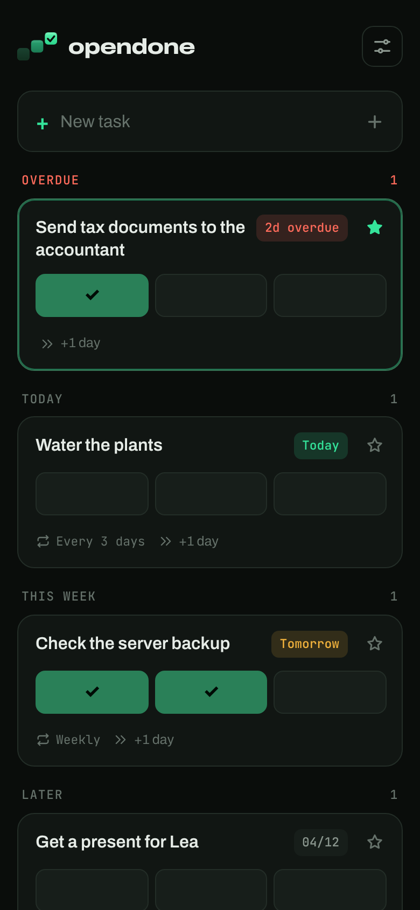

Sorted by when it's due
Overdue, Today, This week, Later, No date. You see what matters first without setting anything up.
A small task list you can run anywhere. Use it right here in the browser, or put it on your own server with one command and sync every device.
docker run -d -p 8080:8080 -v opendone:/data ghcr.io/professorengineergit/opendone
MIT licensed · about 20 MB of RAM · no account at a big provider


Write it down. Add a date if it has one. "Call mum tomorrow" sets the date for you.
Tap the first or second box when you get going. Half-done work stays visible as half-done.
The third box finishes it. Repeating tasks come back on their next date by themselves.
Overdue, Today, This week, Later, No date. You see what matters first without setting anything up.
Daily, weekdays, every 2 or 3 days, weekly, every 2 weeks, monthly, yearly. A task due on the 31st stays on the last day of each month.
On your server, a change on your phone shows up on your laptop a moment later. No refresh button.
Add it to your home screen or dock. It opens instantly, and in browser mode it works fully offline.
Dark, quiet, one accent color. Fonts, colors, density, glow, confetti, CRT scanlines and matrix rain are in the settings, off until you want them.
One SQLite file on your machine. Export everything as JSON whenever you like and import it anywhere OpenDone runs.
Google Tasks is good at the basics. OpenDone covers the same basics, adds progress and control, and runs where you want. A few things it does not do yet.
| OpenDone | Google Tasks | |
|---|---|---|
| Due dates, notes, starring | Yes | Yes |
| Repeating tasks | Yes | Yes |
| Drag to reorder | Yes | Yes |
| Progress in three steps | Yes | No |
| Run it on your own server | Yes | No |
| Use it without any account | Yes, in the browser | No |
| Themes, fonts, accent color | 57 settings | No |
| Open source | MIT | No |
| Subtasks | Not yet | Yes |
| Several lists | Not yet | Yes |
| Push reminders | Not yet | Yes |
Any machine with Docker or Node.js 22.5+ works: a Raspberry Pi, a NAS, a small VPS. Open the address, create the first account, and that account is the admin.
docker run -d --name opendone \
-p 8080:8080 -v opendone:/data \
--restart unless-stopped \
ghcr.io/professorengineergit/opendonecurl -O https://raw.githubusercontent.com/ProfessorEngineergit/tasks/main/compose.yaml
docker compose up -dgit clone https://github.com/ProfessorEngineergit/tasks opendone
cd opendone
node server/server.jsNo npm install. The server has no dependencies.
Accounts, reverse proxy, backups and Firebase are covered in the README.